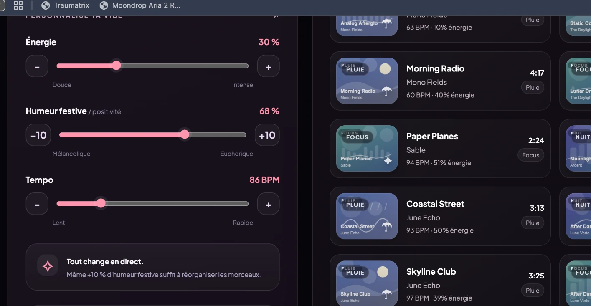

mood.fm
Écoute ce que tu ressens.
Une expérience musicale qui laisse l'utilisateur choisir son ambiance, ajuster son énergie et redécouvrir sa playlist à chaque mouvement.
ESSAYER L'EXPÉRIENCE ↗Prototype interactif · 160 titres réels, photos d’artistes chargées depuis Wikipédia · Aucune diffusion audio
Chill du soir.
Ton énergie, ton tempo, tes découvertes.
Et si une playlist
suivait l'instant ?
Une même playlist ne convient pas à toutes les situations. Mood.fm propose de partir d'une sensation plutôt que d'une liste figée : Focus, Nuit, Road trip, Pluie, Soirée ou Chill.
Chaque ambiance sert de point de départ. Trois réglages — énergie, humeur festive et tempo — réorganisent immédiatement les recommandations. L'expérience reste volontairement simple et lisible.
Un objectif UX : rendre la personnalisation musicale immédiate, visible et agréable à explorer.
Une interface qui
change de ton.
De l'accueil à la bibliothèque : une direction visuelle renouvelée, plus éditoriale, avec des pochettes distinctes pour chaque morceau.


01 / ACCUEIL
Entrer dans une ambiance.
02 / DÉCOUVERTE
Explorer plusieurs atmosphères.

03 / BIBLIOTHÈQUE
Revenir à ses sélections.
Une seule barre.
Tout évolue.
Le prototype web contient 160 vrais titres sélectionnés. Les recommandations se reclassent dès qu'un curseur est déplacé, même de 10 %. La liste peut être parcourue en continu et filtrée par titre ou artiste.
Les artistes suggérés évoluent avec la playlist active et les sélections sauvegardées. Chaque titre présente une photo de son interprète lorsque la source Wikipédia est disponible. Un mini-lecteur visuel permet de parcourir les pistes sans prétendre lire de véritable audio.
MODIFIER UNE VIBE ↗Une vibe.
Ton propre mix.
Teste les six ambiances, les curseurs instantanés et les artistes suggérés.